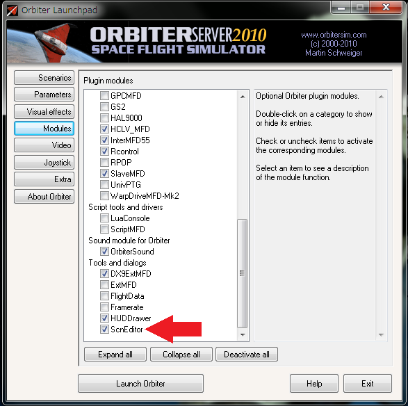
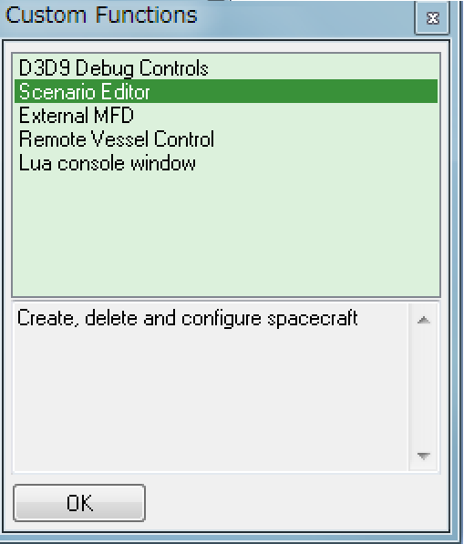
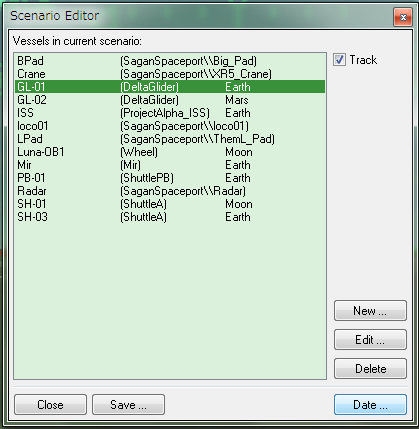
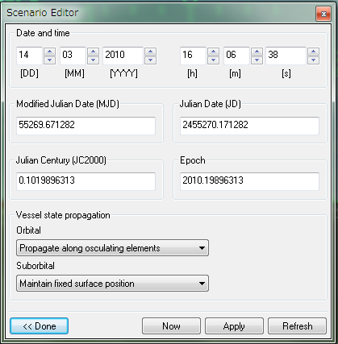

シナリオエディタ 基本操作と日時の変更
Orbiterでは現実の太陽系が再現されており、惑星や宇宙船の移動には長い時間を必要とします。
シナリオエディタを使えば、プレイ時間を大幅に短縮できます。
シナリオエディタを開く
LaunchpadのModulesタブをクリックして、ScnEditorにチェックを入れる。

ゲーム内でCtrlキーを押しながらF4キーを押す。
出てきたウィンドウでScenario Editorを選んでOKをクリック。

シナリオを保存する
左下のSaveをクリックすると、現在のシナリオに名前をつけて保存できる。

日時の変更
シナリオエディタを開いて、右下のDateをクリック。
（上の画像を参照）
▲ボタンをクリックするか、キーボードで直接日時を入力。
右下のApplyと書かれたボタンをクリックすると、指定した日時に移動する。

時刻系についての詳しい解説はこちらを参照してください。
軌道要素と時刻系
Date and time
日時を指定する。
UT（世界時）が使われている。特定地域の標準時を表示することはできない。
左から、日・月・年、時・分・秒を指定する。
Modified Julian Date [MJD]
Modified Julian Date = 修正ユリウス日。
MJDはTransXやIMFDなどの軌道計算ツールでよく用いられる。
100日後に移動したいなら、この数字に100を足す。
小数点以下は時・分・秒に相当するが、12進法ではなく10進法を使うので注意。
(例えば、0.1は10分の1日なので2.4時間になる)
西暦とMJDの変換方法については以下の記事を参照すること。
Orbiter Date Converter
Modified Julian Date [MJD]
Vessel state propagation
シナリオエディタを使ったタイムワープが宇宙船の挙動にどう影響するかを決定する。
通常は、以下の設定のままにしておく。
| Orbital | 軌道上 | Propagate along osculating elements |
|---|---|---|
| Suborbital | 地上・大気圏内 | Maintain fixed surface position |
それぞれの設定の意味は以下の通り。
| Maintain fixed state vectors | 基準となる座標系に対して、現在の位置・速度を保存する。 中心天体の自転の影響を受けない。 |
| Maintain fixed surface position | 地表における位置を保存する。 惑星の自転に合わせて移動する。 |
| Propagate along osculating elements | 現在の軌道にしたがって移動する。 中心天体以外の重力の影響は計算されない。 |
シナリオエディタを使ったタイムワープ
シナリオエディタを使って、長距離移動でのプレイ時間を短縮できる。
宇宙船の飛行中にシナリオエディタを使って時間を操作すると、宇宙船は予測された軌道に従って、その時点のあるべき位置に移動する。
例えば、宇宙船を「半年後に火星に到着する軌道」に乗せておいてから、シナリオエディタで半年後に時間移動すると、一瞬で火星に到着することになる。
通常のTキーおよびRキーでのタイムワープと比べると多少の誤差はあるが、惑星の重力圏からある程度離れた位置で使うのであれば大きな問題はない。
注意点
Orbiterでは、惑星の動きが現実のそれとほぼ同じになるようにシミュレートされている。
重要：ただし、指定された日時によっては、挙動がやや不安定になることがある。
具体的には、UMMU（宇宙飛行士を再現したMOD）がまともに歩けなくなる。
21世紀前半であれば問題ないが、20世紀や21世紀後半になると不安定になる。
惑星表面に着陸しないのであれば、宇宙船の航行にはほとんど影響しない。